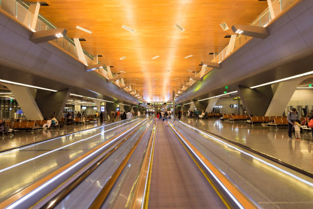
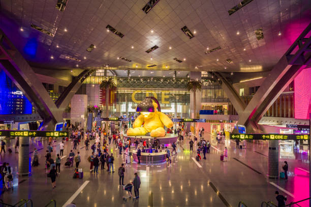
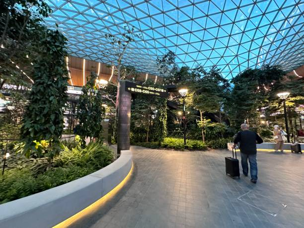
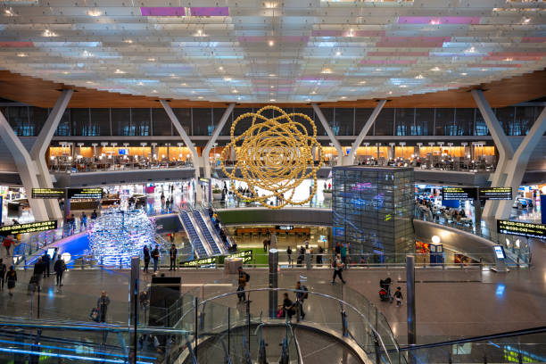
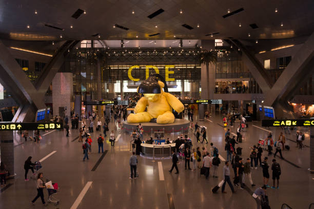
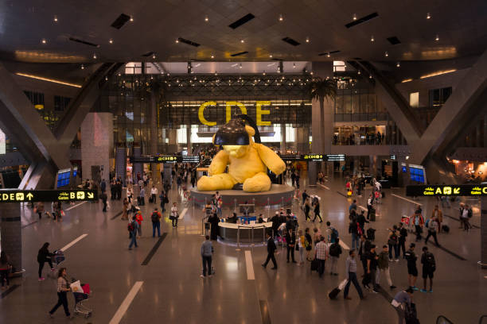
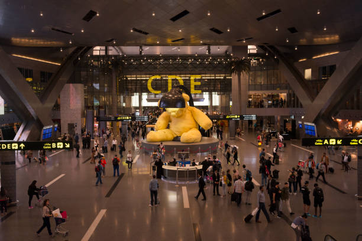

Medzinárodné letisko Hamad je civilné letisko, jedno z dvoch komerčných letísk v Katare, ktoré sa nachádza v hlavnom meste Dauha. Bolo postavené ako náhrada za letisko v Dauhe. Letisko Hamad, predtým známe ako New Doha Airport, malo byť otvorené v roku 2009, ale po sérii dlhých odkladov bolo otvorené 30. apríla 2014. Do 27. mája boli na letisko Hamad presunuté všetky lietadlá národného dopravcu Qatar Airways. V roku 2020 získalo letisko ocenenie Skytrax World Airport Awards ako najlepšie letisko na svete s ročnou prepravou 30 až 40 miliónov cestujúcich a zároveň sa umiestnilo na treťom mieste v prvej desiatke najlepších letísk na svete.
Fakty o letisku
- Medzinárodné letisko Hamad (Dauha, Katar) privítalo v roku 2022 viac ako 35 miliónov cestujúcich
- Stalo sa hlavným letiskom pre cestujúcich prilietajúcich do Dauhy na majstrovstvá sveta vo futbale 2022
- V novembri 2022 sa kapacita letiska zvýšila na 58 miliónov cestujúcich!
- Najvýznamnejšou atrakciou letiska Hamad je skutočný dažďový prales „The Orchard“, ktorý je osvetlený prirodzeným svetlom a ktorý teraz slúži ako nová centrálna odbavovacia hala.
- Vstupná hala sa rozprestiera na ploche viac ako 5 500 m² a pod sklenenou strechou ju vypĺňa viac ako 300 stromov (najvyšší z nich je vysoký viac ako 15 metrov!) a 25 000 rastlín z celého sveta.
- Katarská vláda nemieni zaspať na vavrínoch a v najbližších rokoch plánuje zvýšiť kapacitu letiska Hamad na 70 miliónov cestujúcich ročne.
Najlepšie fotografie letiska:




 

